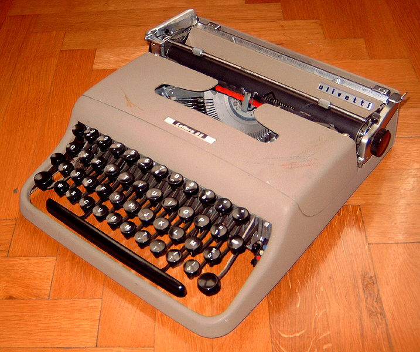

Tractament bàsic de dades
Normalment, les aplicacions que fan servir fitxers no estan centrades en la gestió del sistema de fitxers del vostre ordinador. L’objectiu principal d’usar fitxers és poder emmagatzemar-hi dades, de manera que entre diferents execucions del programa, fins i tot en diferents equips, és possible recuperar-les. El cas més típic és un editor de documents, que mentre s’executa s’encarrega de gestionar les dades relatives al text que esteu escrivint, però en qualsevol moment podeu desar-lo en un fitxer per poder recuperar aquest text en qualsevol moment posterior, i afegir-ne de nou, si escau. El fitxer amb les dades del document el podeu obrir tant en l’editor del vostre ordinador com en el d’un altre company.
Per saber com tractar les dades d’un fitxer dins un programa, cal tenir molt clar com s’hi estructuren. Dins un fitxer es poden emmagatzemar tota mena de valors de qualsevol tipus de dades. La part més important és que aquests valors s’emmagatzemen en forma de seqüència, un rere l’altre. Per tant, com aviat veureu, la manera més habitual de tractar fitxers és seqüencialment, de manera semblant a com es fa per llegir-les del teclat, mostrar-les per pantalla o recórrer les posicions d’un array.
- Un exemple d'accés seqüencial a dades: el missatge d'un telègraf. Font: Wallace Study-Telegraph
S’anomena accés seqüencial al tractament d’un conjunt d’elements de manera que només és possible accedir-hi d’acord al seu l’ordre d’aparició. Per poder tractar un element, cal haver tractat tots els elements anteriors.
Java, juntament amb d’altres llenguatges de programació, diferencia entre dos tipus de fitxers segons com es representen els valors emmagatzemats dins un fitxer.
En els fitxers orientats a caràcter, les dades es representen com una seqüència de cadenes de text, on cada valor es diferencia de l’altre usant un delimitador. En canvi, en els fitxers orientats a byte, les dades es representen directament d’acord al seu format en binari, sense cap separació.
Si bé, a grans trets, l’accés seqüencial a les dades segueix el mateix esquema independentment del tipus de fitxer, cada cas té certes particularitats que fa interessant estudiar-los de manera diferenciada.
Accés seqüencial a fitxers orientats a caràcter
Un fitxer orientat a caràcter no és més que un document de text, com el que podríeu generar amb qualsevol editor de text simple. Els valors estan emmagatzemats segons la seva representació en cadena de text, exactament en el mateix format que heu usat fins ara per entrar dades des del teclat. De la mateixa manera, els diferents valors es distingeixen en estar separats entre ells amb un delimitador, que per defecte és qualsevol conjunt d’espais en blanc o salt de línia. Tot i que aquests valors es puguin distribuir en línies de text diferents, conceptualment, es pot considerar que estan organitzats un rere l’altre, seqüencialment, com les paraules a la pàgina d’un llibre.
El següent podria ser el contingut d’un fitxer orientat a text on hi ha deu valors de tipus real:
I el d’un fitxer amb 4 valors de tipus String (“Hi”, “havia”, “una” i “vegada…”):
El principal avantatge d’un fitxer d’aquest tipus és, doncs, que resulta molt senzill inspeccionar el seu contingut, generar-los d’acord a les vostres necessitats o representar quin ha de ser el seu contingut dins del text d’un altre document, com tot just s’acaba de fer.
Inicialització
Per al cas dels fitxers orientats a caràcter, cal usar dues classes diferents segons si el que es vol és llegir o escriure dades a un fitxer. Normalment, això no és gaire problemàtic, ja que en un bloc de codi donat només es duran a terme operacions de lectura de dades o d’escriptura sobre un mateix fitxer, però no els dos tipus d’operació alhora. Normalment, es llegeixen les dades a l’inici del programa, igual que es pot demanar escriure-les usant el teclat, i es desen quan es disposa dels resultats que cal calcular, com quan correspondria mostrar-les per pantalla.
Per tractar de manera senzilla fitxers orientats a caràcter, Java ofereix les classes Scanner, pertanyent al package java.util, i PrintStream, pertanyent al package java.io.
Com en el cas de qualsevol altra classe que us calgui usar dins el vostre programa, abans de poder realitzar cap operació és imprescindible inicialitzar-la, de manera que es disposi d’una variable sobre la qual es poden invocar els mètodes corresponents.
Scanner
La classe que permet dur a terme la lectura de dades des d’un fitxer orientat a caràcter és exactament la mateixa que permet llegir dades des del teclat. Al cap i a la fi, els valors emmagatzemats en els fitxers d’aquest tipus es troben exactament en el mateix format que heu usat fins ara per entrar informació als vostres programes: una seqüència de cadenes de text. L’única diferència és que aquests valors no es demanen a l’usuari durant l’execució, sinó que són escrits tots amb anterioritat.
Recordeu que per usar la classe Scanner us cal importar-la des del package java.util.
Per tal de processar dades des d’un fitxer, la classe Scanner permet usar una ruta com a paràmetre per inicialitzar-la. El codi següent mostra l’esquema bàsic d’inicialització d’una variable d’aquest tipus de manera que es llegeixin dades des d’un fitxer.
El paràmetre f es correspon a qualsevol variable de tipus File prèviament inicialitzada correctament. En fer-ho, cal tenir en compte que la classe Scanner també es comporta com un tipus compost. Per tant, en el cas de treballar amb diferents fitxers, caldrà inicialitzar diferents variables.
Per exemple, per inicialitzar una variable de tipus Scanner de manera que permeti llegir dades des del fitxer ubicat a la ruta “C:\Programes\Unitat 6\Apartat 2\Exemples\Document.txt”, caldria fer:
PrintStream
Per escriure dades a un fitxer, la classe que cal usar és PrintStream. Igual com amb Scanner, per inicialitzar-la correctament només cal indicar la ruta del fitxer amb el qual treballar. En aquest cas, en tractar-se d’escriptura, la ruta pot indicar un fitxer que pot existir o no dins el sistema. En el cas d’indicar un fitxer que no existeixi, se’n crearà un de nou. En el cas que ja existeixi, les dades contingudes dins del fitxer es perden totalment i aquest queda en blanc, amb mida igual a 0.
Per usar la classe PrintStream us cal importar-la des del package java.io.
En aquest cas, per inicialitzar una variable de tipus PrintStream de manera que permeti escriure dades a un nou fitxer ubicat a la ruta “C:\Programes\Unitat 6\Apartat 2\Exemples\Document.txt”, caldria fer el següent. Com podeu veure, l’esquema és pràcticament idèntic al de Scanner. Però en aquest cas es prepara el fitxer per a l’escriptura.
Alerta, però, ja que el tractament seqüencial de dades mitjançant PrintStream només permet treballar amb fitxers nous. Si la ruta especificada es refereix a un fitxer que ja existeix, el seu contingut serà eliminat totalment.
Control d'errors
Quan es realitzen operacions de lectura i escriptura sobre fitxers poden passar moltes situacions anòmales. Des que, simplement, el fitxer no existeixi a la ruta especificada, fins a que hi hagi algun error en el sistema d’entrada/sortida de l’ordinador o el fitxer estigui corromput i l’operació es vegi interrompuda inesperadament. El tractament de dades amb fitxers és un procés molt més delicat del que aparenta inicialment.
El llenguatge Java considera imprescindible tenir en consideració totes aquestes circumstàncies especials, a les quals anomena excepcions. Per controlar-les, disposa d’un mecanisme una mica especial que és obligatori usar sempre, ja que en cas de no fer-ho s’indicarà que hi ha un error de compilació. Per tant, abans de continuar, és necessari conèixer com funciona el mecanisme de control d’excepcions, ja que en cas contrari no us serà possible dur a terme cap programa que tracti fitxers. Aquesta secció no té cap intenció d’explicar-ho en la seva totalitat, només pretén mostrar-vos el mínim imprescindible per poder seguir endavant, i treballar amb fitxers.
Per començar, i veure que no és possible compilar un programa que no controli excepcions en treballar amb fitxers, proveu el programa següent al vostre entorn de treball. D’acord al seu codi, aquest hauria d’obrir un fitxer anomenat “Document.txt” que hi ha la carpeta de treball de l’aplicació.
En fer-ho, podreu veure com el compilador de Java es queixa d’un error d’aquest estil.
El compilador ha detectat que, donada aquesta inicialització, pot succeir una excepció en el procés d’entrada / sortida, però el codi del programa no l’està controlant (unreported exception …; must be caught, “excepció no declarada ni controlada”, en anglès). Concretament, avisa que pot donar-se el cas d’intentar obrir un fitxer que no existeix (FileNotFound, “fitxer no trobat”, en anglès ). Per evitar aquest error, totes les instruccions vinculades a treballar amb fitxers han d’estar dins del que s’anomena una sentència try/catch.
Una sentència try/catch es composa de dos blocs de codi. Un per indicar les instruccions que cal anar executant mentre no hi ha excepcions (bloc try), i un altre en el moment que se’n produeixi qualsevol (bloc catch).
La sintaxi d’aquest bloc de codi té una certa similitud amb una sentència if/else, des de la perspectiva que es creen dos blocs de codi. Un d’ells s’executa només si es dóna una condició, i l’altre en cas contrari. La sintaxi és la següent:
- La sentència catch captura l'excepció, per tractar-la. Font: Rdikeman
La principal diferència amb un bloc if/else és que no hi ha cap condició lògica a comprovar per decidir quin bloc cal executar. Dins el bloc try s’escriuen normalment les instruccions del programa. Si en qualsevol moment durant l’execució es produeix una excepció en alguna operació d’entrada / sortida, les instruccions dins d’aquest bloc deixen d’executar-se immediatament, i el flux de control del programa salta a la primera instrucció del bloc catch. Llavors, s’executen totes les instruccions dins d’aquest bloc. Si no es produeix cap excepció dins el bloc try, mai s’executa el bloc catch. Per tant, dins del bloc catch es posen les instruccions per tractar que ha succeït un error.
Partint de la traducció del nom de la sentència de l’anglès, bàsicament diu “intenta (try) fer això, i si mai hi ha cap excepció durant el procés, la captures (catch) i la tractes.”
La manera més gràfica de veure aquest fet és directament amb un exemple de codi. Escriviu el programa següent al vostre entorn de treball. Primer de tot, veureu que ja no hi ha cap error de compilació, ja que la instrucció per inicialitzar Scanner ara està dins una sentència try/catch. Un cop escrit, executeu-lo sense que hi hagi un fitxer amb aquest nom, i en el cas contrari. Veureu com el resultat del programa serà diferent. La figura mostra un esquema del flux de control del programa en cada cas.
Si us fixeu en l’exemple, aquest també mostra una particularitat de la sintaxi d’aquesta sentència. A l’inici del bloc catch hi ha una variable declarada, amb l’identificador e, de manera molt semblant a com es faria amb el paràmetre d’un mètode: (Exception e). Aquesta variable pertany a la classe Exception, que està al package java.lang (i per tant, no cal importar).
No s’haurien de dur a terme operacions d’entrada / sortida dins un bloc catch
Les variables de la classe Exception contenen informació sobre l’excepció que ha desencadenat el bloc catch on pertanyen. Java s’encarrega d’inicialitzar-les correctament sempre que es produeix alguna excepció.
Per tant, només us heu de preocupar que ja disposeu d’aquesta variable per poder descriure quin error s’ha produït exactament. Aquesta descripció és sempre una cadena de text, que pot ser impresa de la mateixa manera que es faria amb una variable de tipus String. Quan es produeix una excepció, si el codi afectat és dins el mètode inici(), normalment n’hi ha prou a mostrar el missatge d’error per pantalla.
Ara bé, si el codi és dins un altre mètode auxiliar, i aquest a la seva declaració indica que té un paràmetre de sortida, cal tenir en compte que dins el codi és sempre obligatori invocar la sentència return, tant si ha succeït una excepció com si no. En cas contrari, Java dóna un error de compilació. Donat aquest fet, caldrà que dins del bloc catch s’invoqui return amb algun valor que es consideri no vàlid, i que sigui a posteriori quan es comprovi si el valor retornat en invocar aquest mètode és vàlid o no.
A mesura que aneu veient nous aspectes del tractament de fitxers al llarg de l’apartat, es veurà més clar el funcionament de la sentència try/catch i el tractament d’excepcions, especialment pel que fa a la detecció d’errors a mètodes auxiliars.
Lectura de dades
Des del punt de vista d’instruccions que cal executar, la lectura seqüencial de dades des d’un fitxer orientat a caràcter és pràcticament igual a llegir dades des del teclat. Els valors es van llegint de manera ordenada, des de l’inici de la seqüència que representen fins al final. De fet, ara que ja coneixeu què és una classe, i que aquestes es poden comportar com tipus compostos, com inicialitzar-les sobre una variable i com invocar mètodes correctament a partir d’aquesta variable, és un bon moment per recapitular sobre el funcionament de la classe Scanner, amb vista a mostrar com dur a terme la lectura de dades des d’un fitxer.
Les operacions de lectura usant Scanner es duen a terme mitjançant la invocació dels mètodes que ofereix, resumits a la taula, els quals avaluen el valor tot just llegit.
Scanner| Mètode | Tipus de dada llegida |
|---|---|
nextByte() | byte |
nextShort() | short |
nextInt() | int |
nextLong() | long |
nextFloat() | float |
nextDouble() | double |
nextBoolean() | boolean |
next() | String (una paraula) |
nextLine() | String (una frase) |
En el cas d’un fitxer, la variable de tipus Scanner gestiona internament un apuntador que sempre indica sobre quin valor actuaran les operacions de lectura. Cada cop que es fa una lectura, l’apuntador avança automàticament fins al valor següent dins el fitxer, i no hi ha cap manera de fer-lo recular. Quan una variable de tipus Scanner s’inicialitza, aquest apuntador es troba en el primer valor dins el fitxer. Aquest procés es va repetint fins que s’han llegit tants valors com es desitja. La figura mostra un petit esquema d’aquest procés, recalcant com avança l’apuntador a l’hora de fer operacions de lectura sobre un fitxer que conté valors de tipus enter.
Un cop s’ha llegit un valor, aquest no pot ser “rellegit”.
Un cop s’ha mostrat com funciona l’apuntador intern en llegir valors des d’un fitxer, val la pena tornar a repassar la diferència entre el mètode next() i nextLine(), ja que ambdós avaluen una cadena de text. El primer només llegeix una paraula individual, considerant “paraula” un conjunt de caràcters que no estan separats per espais o salts de línia. Aquest conjunt de caràcters poden ser tant paraules, tal com es trobarien en un diccionari (“casa”, “hola”, etc.), com valors numèrics expressats en format text (“2”, “3,14”, “1024”, etc.). En canvi, nextLine() llegeix una frase completa. Concretament, el que llegeix és tot el text que hi ha entre la posició actual de l’apuntador i el proper salt de línia. L’apuntador es posa llavors a l’inici de la línia següent.
Els diferents valors es distingeixen en separar-se per espais o salts de línia.
Un cop s’ha finalitzat la lectura de les dades del fitxer, ja siguin totes o només una part, i ja no cal llegir-ne més, és imprescindible executar un mètode especial anomenat close(). Aquest indica al sistema operatiu que el fitxer ja no està essent utilitzat pel programa. Això és molt important, ja que mentre un fitxer es considera en ús, el seu accés es pot veure limitat. Si no invoqueu close(), el sistema operatiu pot trigar un temps a adonar-se que el fitxer ja no es troba en ús tot i que el vostre programa ja hagi finalitzat. Sempre cal tancar el fitxer un cop heu finalitzat totes les operacions d’entrada / sortida.
El sistema operatiu diu que un fitxer on s’estan fent operacions d’entrada / sortida està en ús o obert. Si no, es diu que està tancat.
El programa següent mostra un exemple de com llegir deu valors enters des d’un fitxer anomenat “Enters.txt”, ubicat a la seva carpeta de treball. Aquest fitxer de text l’haureu de crear vosaltres, garantint que conté exactament 10 valors enters, separats entre ells per espais en blanc o salts de línia. Fixeu-vos com totes les instruccions relatives a la lectura del fitxer, les operacions d’entrada / sortida, són dins una sentència try/catch. També, fixeu-vos que en acabar la lectura, s’invoca el mètode close).
Una diferència important a l’hora de tractar amb fitxers respecte a llegir dades del teclat és que les operacions de lectura no són producte d’una interacció directa amb l’usuari, que és qui escriu les dades. Només es pot treballar amb les dades que hi ha al fitxer i res més. Això té dos efectes sobre el procés de lectura.
D’una banda, recordeu que quan es duu a terme el procés de lectura d’una seqüència de valors, sempre cal anar amb compte d’usar el mètode adient al tipus de valor que s’espera que vingui a continuació. Saber quin tipus de valor s’espera és quelcom que heu decidit vosaltres a l’hora de fer el programa, però res garanteix que, en escriure el fitxer de text, no us hagueu equivocat sense voler, com pot passar quan escriviu dades mitjançant el teclat. Ara bé, en aquest cas, com que opereu amb fitxers, i no pel teclat, no hi ha l’opció de demanar simplement a l’usuari que el torni a escriure. Per tant, el programa hauria de dir que s’ha produït un error ja que el fitxer no té el format correcte i finalitzar el procés de lectura.
Els mètodes next() o nextLine() mai poden donar error, ja que els valors en un fitxer orientat a caràcter sempre es poden considerar cadenes de text.
D’altra banda, també cal que controleu que mai llegiu més valors dels que hi ha disponibles per llegir. En un cas com aquest, a l’hora de fer entrada de dades pel teclat, el programa simplement es bloquejava, esperant que l’usuari escrivís nous valors. Quan opereu amb fitxers això no succeeix. Intentar llegir un nou valor quan l’apuntador ja ha superat el darrer disponible es considera erroni. Un cop s’arriba al final del fitxer, ja no queda més remei que invocar close() i finalitzar la lectura.
Si el tipus llegit no es correspon al mètode invocat (per exemple, s’ha invocat el mètode nextInt() quan l’apuntador és sobre un real) o s’intenta fer una lectura quan l’apuntador ja ha superat tots els valors del fitxer, es produirà una excepció.
Per veure-ho, proveu d’executar l’exemple anterior amb fitxer on, o bé algun dels valors continguts no és de tipus enter, o el nombre de valors emmagatzemats és inferior a deu.
Repte 1. Feu un programa que llegeixi successivament 15 valors de tipus real des d’un fitxer anomenat “Reals.txt”. Aquest fitxer el podeu fer vosaltres mateixos. El programa ha de mostrar quin dels valors dins el fitxer és el més gran.
Escriptura de dades
- 
- L'escriptura seqüencial de valors també és com usar una màquina d'escriure. Font: LjL
En aquest cas, l’escriptura seqüencial de dades en un fitxer orientat a caràcter és molt semblant a mostrar text per pantalla. Les dades es van escrivint una rere l’altra, amb l’opció de fer-ho consecutivament o separades per línies. Un cop s’ha escrit una dada, ja no hi ha marxa enrere. No és possible escriure informació abans o enmig de valors que ja estan escrits.
En aquest cas, les operacions d’escriptura es porten a terme mitjançant els mètodes proporcionats per la classe PrintStream. Aquests són bàsicament dos, ara ja vells coneguts vostres, que accepten com a únic paràmetre qualsevol tipus primitiu de dades, o una cadena de text: print(…) i println(…). La diferència és que el primer només escriu el valor usat com a paràmetre en format cadena de text, mentre que el segon també inclou automàticament un salt de línia, ja que “println” significa, “print line” (“imprimir línia”, en anglès).
Com en el cas de la lectura, la classe PrintStream també gestiona un apuntador que li permet saber a partir de quina posició del text ha d’anar escrivint. Cada cop que s’invoca un dels seus mètodes d’escriptura, l’apuntador avança automàticament, i no és possible fer-lo recular. A efectes pràctics, aquest apuntador sempre està al final del fitxer, de manera que, a mesura que es van escrivint dades, el fitxer va incrementant la seva mida. La figura mostra un esquema del funcionament de les escriptures.
Recordeu que PrintStream només opera amb fitxer nous. Si s’escriu en un fitxer existent, se sobreescriu totalment.
Un aspecte que val la pena remarcar, i que preveu la figura, és que el procés d’escriptura no genera automàticament el delimitador entre valors. Per tant, és responsabilitat del vostre programa escriure els espais en blanc o salt de línia corresponents. En cas contrari, els valors quedaran enganxats, i en una posterior lectura s’interpretaran com un únic valor. Per exemple, si s’escriu el valor enter 2 i després el 4, sense preveure cap delimitador, en el fitxer s’haurà escrit al final el text del valor 24.
El codi següent serveix com a exemple d’un programa que escriu un fitxer dins la seva carpeta de treball anomenat “Enters.txt”. Aquest conté 20 valors enters, de manera que, començant per l’1, cadascun sigui el doble de l’anterior. Compileu-lo i proveu-lo. Fixeu-vos que si ja existia un fitxer amb aquest nom, quedarà totalment sobreescrit. Després, podeu intentar llegir-lo amb el programa d’exemple anterior per llegir 10 valors enters i mostrar-los per pantalla.
En acabar l’escriptura d’un fitxer també és imprescindible invocar el mètode close() sobre la variable de tipus PrintStream.
En el cas de les operacions d’escriptura, el tancament del fitxer encara és molt més important. Això es deu al fet que els sistemes operatius sovint porten a terme de manera diferida l’actualització de les dades. O sigui, el fet d’executar una instrucció d’escriptura no vol dir que immediatament aquestes dades ja estan escrites al fitxer. Pot passar un interval de temps variable entre les dues accions. Només a l’hora d’executar el mètode close() es força a què totes les dades pendents d’escriure s’actualitzin definitivament al fitxer.
El procés d’actualització de les dades es coneix com flush (“tirar de la cadena”, en anglès).
Repte 2. Modifiqueu l’exemple de manera que els valors enters, en lloc d’estar tots escrits en una sola línia en el fitxer de text, estiguin dividits en 4 línies. A cada línia hi ha d’haver escrits 5 valors.
Aspectes importants de l'accés seqüencial
Un cop s’ha presentat com dur a terme l’accés seqüencial a un fitxer orientat a caràcter, i ja sabeu exactament com es materialitza en sentències del Java, val la pena exposar algunes situacions o problemàtiques que us podeu trobar i que poden complicar el procés. L’objectiu d’aquest apartat és indicar alguns esquemes o estratègies que podeu preveure per dur a terme correctament la lectura o l’escriptura d’un fitxer d’aquest tipus.
Detecció de final de seqüència
Tot i que el procés de lectura seqüencial de fitxers és força semblant a la lectura de dades des del teclat, una de les diferències substancials que cal tenir molt en compte és que el nombre de valors que es poden llegir està fixat pel propi contingut de fitxer. Mai es donarà el cas que el programa es quedi esperant que l’usuari escrigui text. Si s’intenta llegir valors d’un fitxer quan ja s’ha arribat al final de la seqüència i s’han esgotat els valors continguts, es produirà una excepció. Tot i que mitjançant el control d’excepcions es pot detectar i tractar aquest cas, en general, és millor generar codi dins els vostres programes que eviti arribar a aquesta situació. Per això, disposeu bàsicament de tres estratègies:
1. Nombre de valors coneguts a priori
El nombre de valors dins el fitxer ja és conegut dins del programa. Per exemple, si s’espera que el fitxer tingui 9 valors, el programa només hauria de fer 9 lectures i cap més. Si se’n fan menys, no passarà res, a part que deixarem valors sense llegir, però si se’n fan més, es produirà una excepció. Aquest és el cas de l’exemple de lectura que s’ha mostrat.
2. Usar una marca de finalització
El darrer valor no representa realment una dada que es vol tractar, sinó que és un valor especial que identifica el final de la seqüència. Aquest valor no es considera com part dels valors a tractar dins el fitxer, només és una marca de finalització. Ara bé, l’estratègia només val si hi ha valors que no es donaran mai dins la seqüència, ja que en cas contrari és impossible distingir entre un valor que indica la marca de finalització, o un que realment és vàlid i cal tractar. Per exemple, si se sap que tots els valors seran sempre entre -50 i 50, es podria usar un valor -100 com a marca de finalització, tal com mostra l’exemple de fitxer següent. Si el fitxer pogués preveure qualsevol valor, llavors aquesta estratègia no us serveix.
El programa següent seria l’adaptació de l’exemple de lectura de dades des d’un fitxer anomenat “EntersMarca.txt” partint d’aquesta estratègia. Proveu-lo usant fitxers amb diferents valors escrits. En aquest cas, la marca de següent és el valor enter -100.
3. Nombre de valors indicat al propi fitxer
El primer valor de tota la seqüència pot ser un enter que identifica quants valors hi ha escrits a continuació, de manera que el programa mai farà més lectures de les establertes. Per exemple, en el fitxer següent, el primer valor indica que tot seguit hi ha 9 enters. Per tant, un programa no hauria d’intentar llegir-ne més dels indicats, o està garantit que es produirà una excepció.
El programa següent seria l’adaptació de l’exemple de lectura de dades des d’un fitxer anomenat “EntersMida.txt” partint d’aquesta estratègia. Proveu-lo usant fitxers amb diferents valors escrits.
Evidentment, aquests mecanismes no són immunes als errors de programació, ja que pot succeir que us despisteu i que les coses no encaixin. Potser us heu oblidat d’escriure tots els valors que toca al fitxer, que per algun motiu s’hagi truncat o corromput i s’hagi perdut la marca de finalització, o que el nombre de valors escrit al principi no sigui correcte. Per això és important tractar les excepcions i mostrar l’error per pantalla, ja que en operar amb fitxers, mai es pot estar del tot segur que les dades que es volen llegir tindran un format correcte.
Processament de les dades llegides
Una de les particularitats del tractament seqüencial de dades des d’un fitxer és que, un cop s’inicialitza la variable a usar per accedir-hi, les dades només es poden llegir una rere l’altra, però no és possible recular. L’apuntador del fitxer només avança cada cop que es fa una operació, però no pot retrocedir. Això vol dir que s’hauria de plantejar el processament de les dades de manera que amb un únic recorregut el programa ja sigui possible de fer la tasca en qüestió. Això normalment porta a dos plantejaments possibles.
1. Tractament a mesura que es llegeix
En alguns casos, les tasques que ha de dur a terme el programa es basen en un únic recorregut. Es pot establir un cert paral·lelisme entre una situació en la qual es parteix d’un array on estan disposades ja les dades, i vosaltres per tractar-les en teniu prou a fer un recorregut des del primer al darrer element. En aquest cas, en lloc d’avançar posició a posició dins un array, s’avança valor a valor dins d’un fitxer. Exemples d’aquest cas pot ser trobar el màxim, el mínim, calcular una mitjana, mostrar els valors que compleixen certes condicions per pantalla, etc.
Per exemple, el programa següent, el qual, donat un fitxer anomenat “Document.txt” amb diferents paraules, compta la mitjana, sense decimals, de vocals per paraula que hi ha en total (nombre de vocals / nombre de paraules). Per saber quan acaba el fitxer, s’usa la paraula “fi” com a marca (que no ha de ser tractada). Com es pot veure, fins i tot en casos on cal acumular resultats i fer codi una mica complex usant disseny descendent es poden dur a terme les tasques d’una sola passada, si es plantegen correctament.
2. Primer lectura i tractament posterior
Una altra opció disponible és primer anar emmagatzemant les dades llegides dins un array a mesura que es llegeixen, i posteriorment operar sobre aquest array. Aquest estratègia té el desavantatge que els vostres programes són una mica menys eficients, ja que primer fan la lectura de dades i després realment es dediquen a fer la seva feina. A més a més, ocupen més memòria, ja que cal declarar l’array on desar totes les dades del fitxer.
Malauradament, hi ha situacions on és inevitable fer-ho d’aquesta manera. Qualsevol situació on abans de tractar les dades cal fer alguna modificació que depèn de totes elles, caldrà fer-ho d’aquesta manera. Molts programes d’ordinador precisament per això usen aquesta estratègia. Per exemple, els editors de text o fulls de càlcul fan precisament això. Primer carreguen el fitxer a memòria i posteriorment el mostren per pantalla de manera que us permeten modificar-lo. Fins que no feu “desar”, no s’actualitzen les dades de memòria a disc.
L’exemple següent és un altre cas, molt més senzill que un processador de text, en què no es pot fer la feina requerida sense carregar abans les dades a un array. Llegeix les dades d’un fitxer anomenat “Enters.txt”, les ordena, i llavors les escriu en un nou fitxer anomenat “EntersOrdenat.txt”. Per ordenar un conjunt de valors, cal disposar de tots ells alhora. No hi ha cap altra manera. El programa es basa en indicar en el seu primer valor el nombre d’elements del fitxer per saber quants cal llegir. Fixeu-vos també com, mitjançant disseny descendent, es distribueix el codi per tractar cada fitxer en mètodes diferenciats.
També fixeu-vos que aquest és un cas en què es fa tractament d’excepcions en un mètode auxiliar, a llegirDades. En un cas com aquest, normalment no es mostra directament l’error per pantalla, sinó que s’invoca la sentència return amb un valor invàlid, i és inici qui comprova si aquest mètode ha acabat correctament o incorrectament. Això es deu al fet que tot mètode declarat amb un paràmetre de sortida sempre ha de retornar algun valor, tant si succeeix una excepció com si no.
Un altre cas on cal usar aquesta estratègia per tractar dades és quan cal modificar alguna de les dades que hi ha en un fitxer orientat a caràcter. Per exemple, suposeu que voleu canviar només un dels seus valors, deixant la resta igual. Atès que PrintStream elimina les dades d’un fitxer tan bon punt s’inicialitza, en realitat no és possible modificar un valor concret. Cal reescriure el seu contingut totalment, preveient els valors que es volen modificar en fer-ho.
Per exemple, el programa següent modifica un fitxer orientat a caràcter que conté 10 valors de tipus enter i suma 5 als valors que hi ha a les posicions parell. Per fer-ho, caldrà llegir tots els valors, emmagatzemar-los en un array, fer les modificacions escaients, i després sobreescriure el fitxer original al complet. Per saber quants valors hi ha, s’usa l’estratègia d’indicar-ho a l’inici del fitxer.
Múltiples accessos al fitxer
Us podeu trobar casos en què un programa ha de fer moltes operacions senzilles sobre les dades d’un fitxer, de manera que cadascuna d’elles, individualment, es podria fer a mesura que el llegeix el fitxer. Per exemple, suposeu un programa que ha de trobar el màxim, el mínim, i la mitjana aritmètica dels valors a un fitxer. En un cas com aquest, intentar fer moltes coses alhora en una única passada sobre les dades d’un fitxer pot arribar a complicar el codi, o fins i tot trencar el vostre disseny descendent, ja que tindreu blocs de codi que fan moltes coses en paral·lel en lloc de fer una tasca molt concreta i fàcil d’identificar. Es va calculant tot alhora a mesura que es llegeixen les dades, de manera que en lloc de tres mètodes calculMaxim, calculMinim i calculMitjana, podeu acabar amb un de sol anomenat calculMinimMaximMitjana!.
Una possible opció en aquest cas seria fer múltiples accessos al mateix fitxer, de manera que es fa un recorregut seqüencial nou per cada tasca individual. El fitxer s’obre, es tracten els valors i es tanca diverses vegades. Ara bé, això no és massa eficient donades les capacitats dels ordinadors moderns, en els quals la memòria és abundant, ja que precisament l’accés a fitxers és un dels punts més lents del sistema. En casos com aquest, el millor és usar l’estratègia de primer llegir els valors i desar-los en un array, i després tractar-lo per dur a terme cada tasca individual.
Només seria aconsellable fer múltiples recorreguts en el cas de voler limitar la despesa de memòria del vostre programa. Per exemple, si realment els fitxers són enormes, o el programa ha de funcionar en un ordinador amb una quantitat modesta de memòria. A escala d’aquests materials, no es donarà mai el cas. Al cap i a la fi, recordeu que, actualment, un simple processador de text no té problemes per carregar fitxers amb diversos megabytes d’informació.
Fitxers amb valors de diferents tipus
Un aspecte que també val la pena tenir en compte és que, tot i que en els exemples mostrats sempre s’ha treballat amb fitxers que contenen valors del mateix tipus, res impedeix barrejar-los. Simplement haureu de tenir sempre present quin és el format del fitxer que llegiu, i seguir-lo fidelment quan n’escriviu un de nou. En casos com aquest, és molt recomanable fer-se un esquema d’aquest format, per tenir-lo sempre present. Llavors, només cal cridar el mètode adient segons el tipus de dada esperat.
Per exemple, suposeu un programa que mostra la nota mitjana d’un conjunt d’estudiants. Per cada estudiant, els valors es desen en línies diferents, per facilitar la seva comprensió, d’acord al format següent. A la darrera línia hi ha la paraula “fi” com a marca de final.
Per exemple:
El codi que el resol podria ser el següent. Estudieu-lo amb atenció, ja que pot resultar una mica més complicat, a l’hora de llegir dades de diferents tipus barrejats. El punt més interessant és el fet que una variable de tipus Scanner pot ser usada com a paràmetre d’entrada d’un mètode. En aquest aspecte, en tractar-se d’un tipus compost, no és diferent d’un String o un array.
Repte 3. Modifiqueu l’exemple de manera que ara faci el següent. D’una banda, en lloc de mostrar les dades per pantalla, les ha d’escriure en un fitxer anomenat “NotaMitja.txt”. D’altra banda, es canvia el format del fitxer “Notes.txt”. Per controlar el nombre de notes de cada estudiant, enlloc d’indicar-ho directament al tercer valor de cada línia, ara es posa al final de cada línia el valor -1. Per exemple, ara ha de poder llegir el fitxer següent:
Accés seqüencial a fitxers orientats a byte
En el cas dels fitxers orientats a byte, les dades també s’emmagatzemen com una seqüència de valors, i per tant, l’esquema general que aplica en fitxers orientats a caràcter també es pot aplicar a aquest altre tipus. Totes les estratègies per saber quantes lectures és possible dur a terme també apliquen. La diferència fonamental és que no s’utilitza la seva representació en forma de cadena de text, sinó que s’usa el seu format binari, directament tal com s’usa dins de la memòria de l’ordinador. Segons el tipus de dades del valor emmagatzemat, aquest s’emmagatzemarà dins d’un nombre determinat de bytes. A més a més, els fitxers orientats a byte no usen cap delimitador per separar els valors.
La taula mostra un recull de la mida de les representacions en binari dels diferents tipus primitius de Java.
| Tipus | Paraula clau Java | Mida (bytes) |
|---|---|---|
| caràcter | char | normalment 2 |
| byte | byte | 1 |
| enter curt | short | 2 |
| enter simple | int | 4 |
| enter llarg | long | 8 |
| real de simple precisió | float | 4 |
| real de doble precisió | double | 8 |
Donat aquest fet, suposeu que voleu emmagatzemar dins un fitxer d’aquestes característiques els valors enters 2, -14 i 25. Això vol dir que dins el fitxer es desen d’acord a la seva representació binària en 4 bytes (32 bits), que seria la següent per a Java:
La representació binària dels enters en Java és el complement a dos.
- 2:
00000000000000000000000000000010 - -14:
11111111111111111111111111110010 - 25:
00000000000000000000000000011001
La figura mostra un esquema de quina seria l’estructura d’un fitxer orientat a byte que conté aquests tres valors. Primer es mostra el seu equivalent en fitxer orientat a caràcter i quin seria el contingut directament en format binari (els tres conjunts de 0 i 1 tot just presentats, un rere l’altre). Tot i que, per motius d’espai a la figura, cada valor està en una fila diferent, dins un fitxer estarien escrits com una seqüència completa. No hi ha salts de línia. Finalment, a la figura es mostra en un format en què es diferencia el valor de cada byte, de manera que és més fàcil de seguir-ne el contingut, comptant que cada enter es representa amb 4 bytes.
Per inspeccionar un fitxer orientat a byte cal un editor hexadecimal, com l’HexEdit (Windows) o el GHex (Unix).
La notació hexadecimal
Treballar amb notació binària és una mica farragós, ja que els valors es codifiquen en seqüències de 0 i 1 que poden ser llargues (32-64 bits), de manera que ocupen força espai i resulten difícils de llegir. Normalment, per facilitar la comprensió, els valors es representen en sistema hexadecimal, de manera que queden millor resumits i són fàcils de dividir en bytes. En el sistema hexadecimal, els dígits van del 0 al 15, comptant que els valors del 10 al 15 es representen amb les lletres A a la F. Cada dígit representa 4 bits, de manera que 0 = 0000, 1 = 0001 … E = 1110, F = 1111. D’aquesta manera, un byte es representa usant dos dígits.
Quan un valor es vol representar en hexadecimal, s’usa el prefix “0x”. Aquest no és part del valor, només és un símbol per indicar això.
Tingueu en compte que quan es diu que les dades es representen en binari, es vol dir exactament això. No es tracta que al fitxer s’escriu text amb els caràcters ‘1’ i ‘0’. Si intenteu obrir un fitxer orientat a byte amb un editor de text, no visualitzareu res. A mode d’exemple, la majoria de fitxers dels processadors de text o de fulls de càlcul són orientats a byte. Per tant, si els obriu amb un editor de text simple, el que es visualitzarà serà totalment incomprensible (i a més a més, patiu el risc de fer malbé les dades contingudes).
Si us fixeu en la figura, quan els valors es resumeixen separant els seus bytes en hexadecimal, un fitxer orientat a byte té una estructura semblant a la d’un array, on cada posició seria representada per cadascun dels seus bytes, i cada valor concret en realitat ocupa un cert nombre de posicions. Aquesta característica cal que la tingueu ben present, ja que serà molt rellevant més endavant.
Tot això vol dir que no és possible generar fitxers orientats a byte només amb un editor de text, ni tampoc són gens fàcils d’inspeccionar a simple vista. El principal avantatge d’un fitxer d’aquest tipus és que, a costa d’una certa complicació a l’hora de controlar el seu contingut, tots els valors d’un mateix tipus sempre ocuparan exactament el mateix espai dins del fitxer. En molts casos, això vol dir que el fitxer ocupa menys espai. Per exemple, si es volen emmagatzemar els valors de tipus enter 15 i 10371, en un fitxer orientat a caràcter el primer ocupa 2 caràcters i el segon cinc. Tenint en compte que s’han de separar d’un espai, això equival a 8 o 16 bytes, ja que, depenent de la configuració del vostre entorn de treball, cada caràcter a Java es desa en 1 o 2 bytes. En el cas d’un fitxer orientat byte, escriure tots dos sempre ocuparà 8 bytes.
Inicialització
En aquest cas, per als fitxers orientats a byte es pot usar la mateixa classe tant si es volen llegir dades com si es volen escriure.
Per tractar de manera senzilla fitxers orientats a byte, Java ofereix la classe RandomAccessFile, pertanyent al package java.io. Aquesta s’usa tant per llegir com per escriure dades.
Novament, aquesta actua com un tipus compost. Per tant, igual que passa amb les classes File, Scanner o PrintStream, cal inicialitzar-la amb una variable diferent per cada fitxer sobre el qual es vol treballar (en el cas de treballar amb més d’un fitxer alhora). La manera de fer-ho és amb la instrucció següent:
En aquest cas, per inicialitzar una variable d’aquest tipus correctament calen dos paràmetres. D’una banda, i igual que passava amb Scanner, cal especificar la ruta del fitxer amb el qual es vol treballar. Addicionalment, cal indicar mitjançat una cadena de text el mode de treball a l’hora de processar les dades del fitxer. Hi ha diversos modes de treball, però només veureu els dos més senzills, usats en la immensa majoria de casos. La utilitat dels altres modes és més marginal.
Aquests dos modes són:
- r: mode lectura. Indica que només es volen llegir dades des del fitxer representat per la ruta especificada. Això implica que la ruta ha de referir-se a un fitxer que hi ha al sistema de fitxers. En cas contrari, es produirà un error. També produirà un error qualsevol intent d’invocar mètodes associats a l’escriptura de dades sobre la variable
RandomAccessFiletot just inicialitzada. - rw: mode escriptura-lectura. Aquest mode permet tant llegir dades des d’un fitxer, igual que l’anterior, com escriure’n. Si la ruta usada es refereix a un fitxer que no existeix, se’n crearà un de nou, que estigui buit.
Per tant, si només es volen llegir dades d’un fitxer ubicat a la ruta “C:\Programes\Unitat 6\Apartat 2\Exemples\Document.txt”, caldria fer:
Si, per contra, es volen escriure dades a un fitxer en aquesta mateixa ubicació, caldrà fer:
Al contrari que amb la classe PrintStream, si la ruta usada en inicialitzar una variable d’aquesta classe en mode “rw” es correspon a un fitxer que ja existeix, no s’esborren les seves dades, ni queden afectades en cap mesura.
Potser us pot semblar una mica estrany o redundant el mode “r”, existint el mode “rw”, que permet fer exactament el mateix i més coses. En realitat, usar el mode “r” sempre que només es volen llegir dades és força útil, ja que garanteix que si, per un error en programar, el vostre programa intenta escriure al fitxer amb el qual treballeu, l’operació d’escriptura s’avortarà immediatament. Aquesta possibilitat és especialment interessant quan s’està treballant amb dades de fitxers, ja que no fa gens de gràcia sobreescriure (i, per tant, perdre) la informació que hi havia en un fitxer a causa d’un error involuntari al codi.
Per tant, a partir d’ara, si només es volen llegir dades d’un fitxer, sempre s’usarà el mode “r” exclusivament.
Escriptura de dades
En aquest cas, es començarà per explicar l’escriptura de dades, en lloc de la lectura. El motiu principal és que, atès que RandomAccesFile treballa amb fitxers orientats a byte, no hi ha cap manera senzilla de generar fitxers de dades pel vostre compte, al contrari que per al cas dels fitxers orientats a caràcter, on n’hi ha prou a usar un editor de text. L’única manera de generar fitxers orientats a byte que puguin ser llegits correctament és mitjançant codi d’un programa.
Cada cop que es fa una operació de lectura o escriptura, l’apuntador es desplaça automàticament el mateix nombre de bytes amb què s’ha operat.
El nombre de bytes desplaçats dependrà de la mida associada al tipus primitiu del Java que s’ha escrit. Cal tenir sempre en compte que, com que RandomAccesFile treballa amb fitxers orientats a byte, aquesta classe transforma el valor del tipus primitiu a una seqüència de bytes, segons el mètode invocat. Per saber exactament en quant ha variat l’apuntador del fitxer, cal saber quants bytes ocupa cada tipus primitiu del Java.
A la taula es mostren els mètodes disponibles per escriure dades.
RandomAccessFile| Mètode | Bytes escrits |
|---|---|
writeBoolean(boolean b) | 1 |
writeByte(byte v) | 1 |
writeChar(char c) | 2 |
writeDouble(double d) | 8 |
writeFloat(float f) | 4 |
writeInt(int i) | 4 |
writeLong(long l) | 8 |
writeShort(short s) | 2 |
A més a més de la diferència en el format de representació de les dades del fitxer i que no cal encarregar-se d’escriure cap delimitador entre els valors, el procés general d’escriptura de dades és similar a la dels fitxers orientats a caràcter: un valor rere l’altre. La figura mostra un esquema del funcionament del procés d’escriptura.
Com a exemple, estudieu i proveu el programa següent. Aquesta és la versió de l’exemple anterior que escriu una seqüència de 20 valors enters, de manera que, començant per l’1, cada valor és el doble de l’anterior. Fixeu-vos com ara no cal escriure cap delimitador. Els valors es van escrivint consecutivament, un rere l’altre.
Sobreescriptura de fitxers
La classe RandomAccessFile té un comportament una mica especial quan escriu dades sobre un fitxer que ja existeix, en lloc de fer-ho sobre un de completament nou. Al contrari que PrintStream, aquest fitxer existent no s’esborra i es comença a escriure des de zero, sinó que les noves dades es van escrivint directament sobre les antigues, reemplaçant-les byte a byte. Aquest és un fet amb el qual cal tenir molta cura, ja que si el nombre de bytes escrits és inferior a la mida del fitxer existent, quedarà “brossa” al final (les dades del fitxer existent que no s’han arribat a sobreescriure).
La figura us mostra un esquema d’aquest fet, en un cas en què hi ha un fitxer amb 6 valors enters escrits i volem reemplaçar el seu contingut a només dos valors, 15 i -100.
Segons aquest comportament, cal anar molt amb compte amb el fet que les dades que no són sobreescrites es mantenen al fitxer, sobretot quan es vol reemplaçar tot el contingut d’un fitxer per dades noves. Normalment, el que se sol fer en aquests casos, és eliminar tots els bytes sobrants un cop s’ha acabat l’escriptura de dades. Per fer-ho, es disposa dels mètodes:
setLength(long mida). Modifica la mida del fitxer, de manera que si el valor especificat com a paràmetre és més petit que la mida actual, s’eliminen totes les dades per sobre de la mida especificada. Si és més gran, s’omple la diferència amb bytes tot a 0.long getFilePointer(). Avalua la posició on és en aquests moments l’apuntador, mesurat en el nombre de bytes des de l’inici del fitxer. Per al cas que esteu tractant, si s’invoca quan heu acabat totes les operacions d’escriptura, us dirà la mida de les dades escrites, i per tant, la nova mida que ha de tenir el fitxer.
El programa següent usa aquest mecanisme per reemplaçar completament el fitxer resultant de l’exemple anterior (20 valors enters, cadascun el doble de l’anterior), anomenat “enters.bin”, per cinc valors enters -1. El resultat final és un fitxer de només 20 bytes, en lloc de 80. Proveu també què succeeix si abans d’executar-lo sobre aquest fitxer de 80 bytes s’elimina la sentència raf.setLength(apuntador).
Lectura de dades
Un cop conegut el procés de lectura de dades de manera seqüencial i el format com s’escriuen les dades en un fitxer orientat a byte, no hi ha gaires sorpreses en el procés de lectura. Novament, es parteix d’un apuntador a la posició inicial que va avançant a mesura que s’invoquen mètodes per fer operacions de lectura. Exactament igual com passava amb la classe Scanner, hi ha un mètode específic per a cada tipus de dades esperat dins la seqüència de valors, enumerats a la taula.
RandomAccessFile| Mètode | Tipus de dada llegida |
|---|---|
readByte() | byte |
readShort() | short |
readInt() | int |
readLong() | long |
readFloat() | float |
readDouble() | double |
readBoolean() | boolean |
readChar() | char |
La figura mostra un exemple del funcionament del procés de lectura en un fitxer orientat a byte.
En el cas dels fitxers binaris també cal controlar no llegir més valors dels que realment hi ha escrits al fitxer, o en cas contrari es produirà una excepció. Ara bé, en aquest tipus de fitxer teniu un avantatge, i és que no sempre cal una marca de finalització o indicar el nombre d’elements prèviament. Atès que cada valor del mateix tipus sempre ocupa el mateix espai (els int 4 bytes, els double 8 bytes, etc.), si coneixeu la mida del fitxer en bytes, es pot calcular quants valors d’un tipus conté fent una simple divisió: mida fitxer/mida tipus.
El codi d’exemple següent llegeix un fitxer orientat a byte anomenat “Enters.bin”, el qual conté cert nombre de valors enters, i els va mostrant per pantalla. Podeu usar el resultat dels exemples d’escriptura de dades. Fixeu-vos especialment en la manera com es calcula el nombre de valors que cal llegir, donada la mida del fitxer i coneguda la mida de la representació en binari d’un enter a Java (4 bytes).
Repte 4. Feu un programa que llegeixi un fitxer orientat a byte que contingui una seqüència de valors reals qualsevol. Cal mostrar-los per pantalla ordenats de més gran a més petit. Tingueu en compte que, per poder provar-lo, abans haureu de generar aquest fitxer vosaltres mateixos d’alguna manera.
Lectura incorrecta de dades
A l’hora de llegir dades en un fitxer orientat a byte, cal procurar sempre usar el mètode encertat a cada moment, d’acord al tipus que s’espera llegir. Ara bé, la classe RandomAccessFile actua d’una manera força diferent a Scanner, ja que quan realitza una lectura incorrecta no es produeix cap excepció. Aquesta classe, quan executa qualsevol dels seus mètode de lectura, sempre llegeix el nombre de bytes associats al tipus de dada que es vol llegir, i els interpreta al valor que correspon dins aquest tipus. Això ho fa independentment del fet que, en realitat, això sigui correcte o no.
Lectura incorrecta de dades
És semblant al que passa si, amb un processador de text, per exemple, intenteu obrir un fitxer que no li pertoca, fet amb un altre programa.
La figura mostra un exemple d’aquest comportament, llegint un valor de tipus real sobre un fitxer on hi ha emmagatzemats valors enters.
Per veure-ho més clar, tot seguit hi ha una versió de l’exemple anterior que llegeix i presenta valors reals. En aquest cas, executar-lo sobre un fitxer on només hi ha escrits valors enters seria incorrecte, ja que no s’està usant el mètode adient per llegir els valors continguts. Ara bé, el mètode readDouble() simplement llegeix 8 bytes consecutius (o sigui, en aquest cas, la representació dins el fitxer de dos enters seguits, 4 + 4 bytes), i intenta interpretar aquests 8 bytes com si fossin un valor de tipus real. Evidentment, el valor resultant de fer aquest procés serà totalment incorrecte, ja que dins del fitxer no hi ha cap valor de tipus real. Executeu-lo per veure’n el resultat.
Per tant, cal ser molt acurat a l’hora de fer lectures sobre fitxers orientats a byte, i tenir ben clar el seu format i quin tipus de dades cal llegir a cada moment, ja que el programa no ens avisarà amb cap excepció. Simplement, aquest comportarà de manera ben estranya en executar-lo.
Accés relatiu a les dades
L’accés seqüencial a les dades d’un fitxer permet processar el seu contingut de manera relativament senzilla, en basar-se en un mecanisme pràcticament idèntic a la lectura de dades des del teclat, o la seva escriptura a la pantalla. Els blocs d’instruccions per dur a terme operacions de lectura i escriptura són bàsicament els mateixos, només varia l’origen i la destinació de les dades en les operacions d’entrada / sortida, així com els aspectes vinculats a si el fitxer és orientat a caràcter o a byte.
Ara bé, en realitat, un fitxer no és ben bé com el teclat o la pantalla, ja que les dades ni deixen d’estar disponibles un cop llegides, ni té sentit que resulti impossible sobreescriure-les parcialment. L’accés seqüencial és una manera còmoda de tractar fitxers, però a canvi de perdre un cert grau de versatilitat.
Si considereu que un fitxer orientat a byte, i només aquest tipus, és com un array de certa envergadura on cada byte representa una posició, ha de ser possible accedir a les dades que conté de la mateixa manera que es fa amb els arrays. D’una banda, de manera seqüencial, fent recorreguts sobre cadascuna de les seves posicions, com heu vist fins ara. Però també ha de ser possible accedir directament a una posició concreta només indicant una ubicació per al seu apuntador de lectura o escriptura. O sigui, donat un fitxer orientat a byte, es pot dir que disposeu d’accés relatiu.
S’anomena accés relatiu a la capacitat d’accedir a qualsevol element dins una seqüència de dades sense haver de tractar prèviament els elements anteriors.
Una bona manera d’entendre aquesta definició és contrastant l’accés relatiu al seqüencial, en ser precisament termes contraposats. Donat un fitxer amb una seqüència de 10 elements, per poder tractar només el desè, si s’hi accedeix seqüencialment, primer cal llegir (i anar descartant successivament) els nou elements anteriors. L’accés relatiu, en canvi, proporciona operacions que fan possible llegir aquest desè element directament, sense haver de processar abans tots els anteriors usant mètodes de lectura.
L’accés relatiu a un fitxer sovint també s’anomena accés aleatori o accés directe. Dins d’aquest context, són termes sinònims.
La classe RandomAccessFile permet l’accés relatiu als fitxers orientats a byte.
Al cap i a la fi, el seu nom, en anglès, vol dir “fitxer d’accés aleatori”.
Posicionament
El primer pas per poder dur a terme accés relatiu a un fitxer és especificar l’índex de la posició que es vol accedir, ja sigui tant per llegir la dada que hi ha emmagatzemada com per escriure-hi un valor nou. Un cop conegut aquest índex, mitjançant la sintaxi adient, és possible aquella posició. En el cas dels arrays, aquesta sintaxi és del tipus:
Atès que RandomAccessFile és una classe, la sintaxi per accedir a les posicions del fitxer és mitjançant la invocació de mètodes. Cada byte individual dins del fitxer és com una posició d’un array, i el primer byte del fitxer es consideraria la seva posició 0.
Per dur a terme la tasca d’indicar l’índex per fer una operació de lectura o escriptura, les variables de tipus RandomAccessFile tenen una diferència important en l’accés a les dades respecte a un array. Si ho recordeu, els seus mètodes de lectura i escriptura no disposen de cap paràmetre on s’especifiqui un índex. Això es deu al fet que les classes que tracten les dades d’un fitxer disposen d’un apuntador intern que indica en tot moment quina és la dada següent a processar. Cada cop que es fa una operació, aquest apuntador es va desplaçant automàticament fins a arribar al final de la seqüència de valors. El que RandomAccessFile proporciona són un seguit de mètodes que permeten modificar el valor d’aquest apuntador, indicant de manera explícita la seva posició. Per tant, per accedir a una posició qualsevol del fitxer, primer cal un pas previ on s’indica la posició en què es vol operar, invocant algun d’aquests mètodes de posicionament de l’apuntador i, posteriorment, es pot dur a terme la lectura o l’escriptura.
Per gestionar el posicionament de l’apuntador, la classe defineix els mètodes següents:
1. void seek(long pos). Ubica l’apuntador exactament a la posició especificada pel paràmetre pos, mesurat en bytes, de manera que qualsevol accés a les dades serà tot just sobre el byte següent. No hi ha cap restricció en el valor d’aquest paràmetre, essent possible ubicar l’apuntador molt mes enllà del final real del fitxer. Això pot semblar una mica estrany, però aviat veureu el motiu.
La figura mostra un esquema del funcionament d’aquest mètode donat un fitxer orientat a bytes que conté un conjunt d’enters. Recordeu que cada enter ocupa 4 bytes.
El codi d’exemple següent usa el mètode seek per moure l’apuntador del fitxer a diferents posicions de manera arbitrària, tal com es podria fer amb l’índex d’un array.
2. int skipBytes(int n). Avança la posició de l’apuntador en n bytes, de manera que aquest passa a valer valor actual + n. La seva invocació avalua el nombre de bytes que realment s’ha avançat. Cal tenir en compte que es pot donar el cas quan el valor resultant no sigui igual a n. Per exemple, si l’apuntador arriba al final del fitxer, el desplaçament de l’apuntador s’atura. Per tant, Independentment del valor del paràmetre n, sempre heu de controlar la posició de l’apuntador del fitxer a partir del valor retornat.
La figura mostra un exemple de com es modifica l’apuntador a partir d’un seguit de crides al mètode skipBytes. Fixeu-vos que si a l’hora d’executar-la l’apuntador sobrepassa la mida del fitxer, aquest incrementa la seva mida amb nous bytes, tots a 0.
El codi d’exemple següent usa el mètode skipBytes per moure l’apuntador a diferents posicions dins del fitxer. Fixeu-vos com, en el darrer posicionament, s’intenta anar molt més enllà de la mida del fitxer. Si se sobrepassa aquest límit, l’apuntador mai avança més enllà de la mida del fitxer.
Lectura de dades relativa
Mitjançant els mètodes seek i skipBytes és possible indicar des de quina posició del fitxer, mesurada en bytes, es vol dur a terme la lectura, la qual es duu a terme amb les mateixes instruccions que el tractament seqüencial (els mètodes readInt(), readDouble,etc.), i de fet, mentre no es torni a invocar cap dels dos mètodes de posicionament de l’apuntador, el tractament del fitxer passa a ser totalment seqüencial. Cada cop que es llegeix un valor, l’apuntador avança tants bytes com la mida del tipus del valor (4 bytes si és un enter, 8 si és un double, etc.).
El programa d’exemple següent fa ús dels mètodes seek i skipBytes per llegir les dades d’un fitxer que només conté valors enters. S’ignora la primera meitat dels valors i es van mostrant els valors de la segona meitat de manera intermitent. O sigui, si hi ha 20 valors, se salten els 10 primers valors i es mostren per pantalla els valors 11, 13, 15, etc. Al llarg de la seva execució, mitjançant el mètode getFilePointer, es va controlant l’evolució de l’apuntador de lectura abans d’accedir a cada valor.
Com succeïa en el tractament seqüencial, a l’hora de fer lectures mitjançant accés relatiu cal anar amb compte i usar sempre el mètode que correspon al tipus del valor al qual es vol accedir, així com procurar no accedir a posicions més enllà de la mida real del fitxer.
Per al cas de l’accés relatiu, a més a més, també cal ser molt acurat per indicar quina ha de ser la posició de l’apuntador. Aquest sempre ha d’estar a la primera posició del grup de bytes que conformen cada valor. En cas contrari, el programa es comportarà de manera erràtica, ja que es llegiran bytes de diferents valors barrejats. Per exemple, si un fitxer només conté valors enters, les úniques posicions vàlides per fer lectures són la 0, 4, 8, 12, etc.
Escriptura de dades relativa
La classe RandomAccessFile té la particularitat que, sempre que fa una escriptura sobre un fitxer que ja existeix, només modifica el valor on s’ubica l’apuntador i cap altre. Per tant, amb l’ajut del mètode de posicionament és possible modificar els valors dins d’un fitxer orientat a byte directament, tal com si fossin els valors dins un array. De fet, normalment, l’escriptura de dades relativa només té sentit quan es treballa sobre un fitxer ja existent.
Cal calcular molt bé quina és la posició en número de bytes on ha d’anar l’apuntador.
L’accés relatiu a un fitxer evita haver de carregar totes les dades a memòria, per exemple a un array, i després tornar-les a escriure si es volen fer modificacions a valors individuals. Aquestes esmenes es poden fer directament sobre les posicions del fitxer.
Un cop l’apuntador es troba a la posició que es vol modificar, el procés d’escriptura mitjançant accés relatiu és similar al de lectura, simplement canviant la invocació de mètodes de lectura pels d’escriptura (writeInt(…), writeDouble(…), etc.).
El programa següent mostra un exemple d’escriptura mitjançant accés relatiu, usant els mètodes de posicionament de l’apuntador. En aquest cas, el programa accedeix a un fitxer orientat a byte que conté un conjunt de valors enters i modifica els valors que ocupen una posició múltiple de cinc amb la seva pròpia posició. O sigui, reemplaça el cinquè valor per un 5, el desè element per un 10, el quinzè element per un 15, etc. fins a arribar al final del fitxer. En acabar l’escriptura, es mostren els nous valors del fitxer per pantalla.
Com passava amb la lectura, cal tenir molta cura a l’hora de posicionar l’apuntador, de manera que aquest estigui sempre en el primer byte del valor que es vol sobreescriure. En aquest cas, però, fer bé els càlculs és especialment crític, ja que en cas contrari fareu malbé dades dins del fitxer.
La figura mostra un exemple d’escriptura sobre una posició invàlida en fer un accés relatiu incorrecte sobre un fitxer orientat a byte amb 6 valors enters. Fixeu-vos que l’apuntador se situa just a la meitat del tercer valor, de manera que, al escriure els 4 bytes d’un nou valor enter, se sobreescriu la segona meitat del tercer valor (2 bytes) i la primera meitat del quart (2 bytes més). El resultat és que es canvia part dels bytes corresponents a aquests valors, de manera que ara passen a representar valors completament diferents. Ja a simple vista, aquests nous valors només deixen entreveure que alguna cosa s’ha fet malament.
Seek més enllà de la mida del fitxer
En el procés d’escriptura mitjançant accés relatiu també hi ha un cas especial. Es tracta de quan s’ha cridat el mètode seek de manera que l’apuntador s’ubica més enllà del final del fitxer (per exemple, el fitxer té 80 bytes i s’ubica a la posició 100), i llavors es duu a terme una escriptura. En aquest cas, la mida del fitxer s’incrementa automàticament fins a la posició de l’apuntador, omplint tots els nous bytes amb 0. Un cop fet, llavors es materialitza l’escriptura.
Mitjançant el sistema d’accés relatiu, també és possible escriure dades directament des del final d’un fitxer existent, de manera que s’annexin.
Per exemple, si donat un fitxer de 80 bytes s’usa el mètode seek per ubicar l’apuntador fins a la posició 100 i llavors es fa l’escriptura d’un enter, el fitxer creixerà fins als 100 bytes, i els seus darrers 20 bytes estaran tots a 0. Llavors es durà a terme l’escriptura, de manera que la mida del fitxer final queda en 104 bytes. El programa següent mostra aquest cas.
Mitjançant aquest sistema, també és possible escriure dades directament des del final d’un fitxer existent, de manera que s’annexin.
Repte 5. Feu un programa que, donat un fitxer orientat a byte que conté qualsevol nombre de valors reals, els ordeni de menor a major. Aquesta tasca l’ha de dur directament sobre el fitxer, i no pas carregant les dades a un array, ordenant i després escrivint-les de nou al fitxer. Per veure que funciona, fer que mostri per pantalla els valors continguts abans i després de l’ordenació.
Solucions als reptes proposats
Repte 1
Repte 2
Repte 3
Repte 4
Repte 5